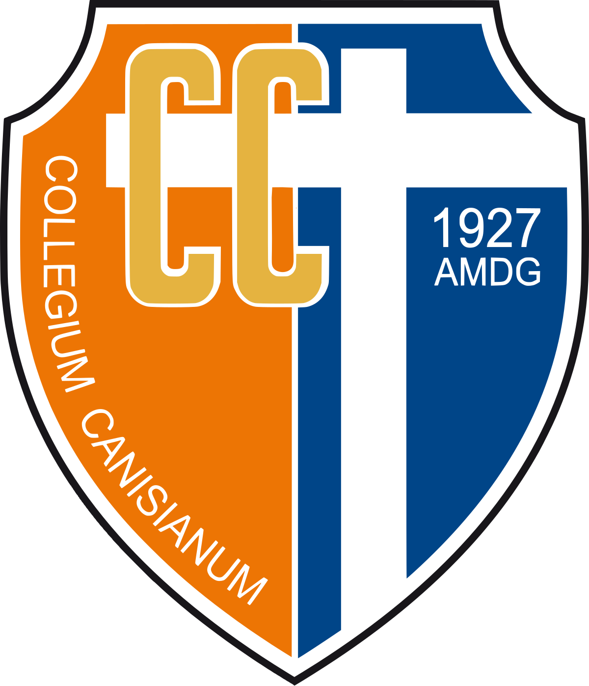

Jadwal Pembelajaran Harian
| Jam Ke | Waktu | Senin | Waktu | Selasa | Rabu | Waktu | Kamis | Waktu | Jumat |
|---|---|---|---|---|---|---|---|---|---|
| Jam Ke-0 | 07.00 - 08.00 | BRIEFING | - | - | - | - | - | - | - |
| Jam Ke-1 | 08.00 - 08.40 | IND 6,8 | 07.30 - 08.15 | ING 1 | ING 6 | 08.00 - 08.40 | SEJ 4 | 07.30 - 08.15 | MAT 6 |
| Jam Ke-2 | 08.40 - 09.20 | MAT 5,7 | 08.15 - 09.00 | BK2,4 | PKN 1,3 | 08.40 - 09.20 | SEJ 4 | 08.40 - 09.20 | AGM 3 |
| Jeda Istirahat 15 menit | |||||||||
| Jam Ke-3 | 09.35 - 10.15 | TIK-1 | 09.15 - 10.00 | SOS-2 | TIK-1 | 09.35 - 10.15 | SOS-2 | 09.35 - 10.15 | IND 7 |
| Jam Ke-4 | 10.15 - 10.55 | TIK-1 | 10.00 - 10.45 | SOS-2 | TIK-1 | 10.15 - 10.55 | SOS-2 | 10.15 - 10.55 | IND 7 |
| Jeda Istirahat 30 menit | 10.45 - 11.30 | Perwalian | |||||||
| Jam Ke-5 | 11.10 - 11.50 | BIO-2 | 11.00 - 11.45 | KIM-4A | BIO-2 | 11.10 - 11.50 | KIM-4A | 11.30 - 12.00 | Istirahat |
| Jam Ke-6 | 11.50 - 12.30 | BIO-2 | 11.45 - 12.30 | KIM-4A | BIO-2 | 11.50 - 12.30 | KIM-4A | 14.00 - 14.45 | Misa |
| Jeda Istirahat 15 menit | 15.00 - 17.00 | Muatan Lokal | |||||||
| Jam Ke-7 | 13.00 - 13.40 | AGM 1 | 13.00 - 13.40 | ORK 3 | MAT 6 | 13.00 - 13.40 | IND 7,8 | ||
| Jam Ke-8 | 13.40 - 14.20 | NAT | 13.40 - 14.20 | ORK 3 | MAT 6 | 13.40 - 14.20 | ING 1,5 | ||
| Ekstra | 15.00 - 17.00 | CWE | - | - | CWE | 15.00 - 16.30 | Biola | ||